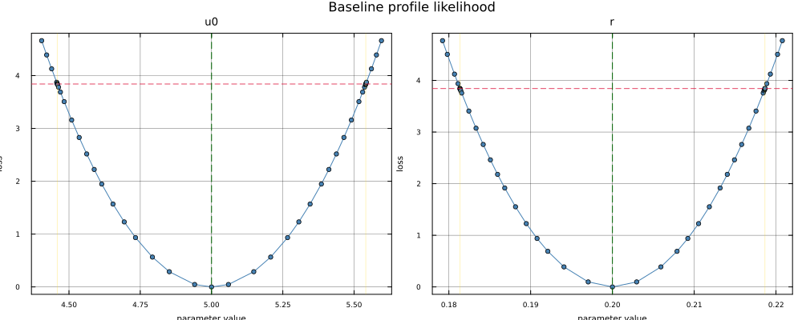
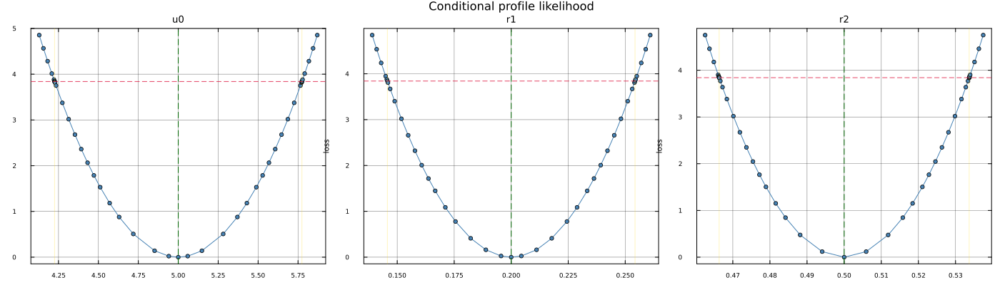
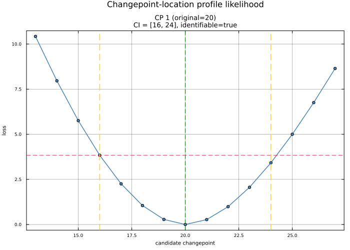
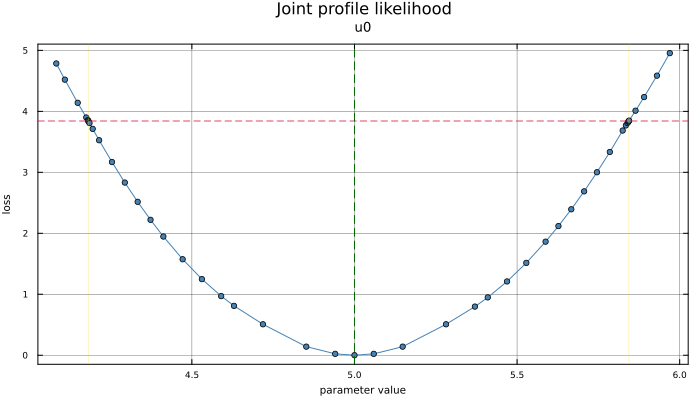

Examples
Baseline and changepoint-aware profiling
The runnable example examples/baseline_and_changepoint.jl compares a model without changepoints with a piecewise-linear model containing one changepoint. It demonstrates the complete workflow using a local BOBYQA optimizer:
- Baseline parameter profiles with
BaselinePLEProblemandprofile_all_parameters. - Conditional parameter profiles with changepoints fixed.
- A changepoint-location profile with all continuous parameters re-optimized.
- A joint parameter profile with the changepoint treated as a nuisance variable.
Run it from the package root:
julia --project=. examples/baseline_and_changepoint.jlThe baseline model is u(t) = u0 + r t, with true parameters (5.0, 0.2). The changepoint model has slopes r1 = 0.2 and r2 = 0.5 before and after day 20, respectively. Both use residual-sum-of-squares objectives and the 95% Wilks threshold χ²(1, 0.95) = 3.8415.
| Analysis | Quantity | Estimate | Approximate 95% interval |
|---|---|---|---|
| Baseline | u0 | 5.0 | [4.459, 5.541] |
| Baseline | r | 0.2 | [0.181, 0.219] |
| Conditional | u0 | 5.0 | [4.225, 5.775] |
| Conditional | r1 | 0.2 | [0.146, 0.254] |
| Conditional | r2 | 0.5 | [0.466, 0.534] |
| Joint | u0 | 5.0 | [4.182, 5.844] |
| Changepoint location | day | 20 | [16, 24] |
The joint interval for u0 is wider than the conditional interval because the changepoint location is estimated rather than held fixed. The changepoint profile reaches its minimum at day 20, and its sub-threshold region contains the true transition. These are validation examples with known answers, not estimates of runtime or performance on large models.
Baseline profiles

Conditional profiles

Changepoint-location profile

Joint profile

Analytic piecewise-linear ODE (test model)
The test suite uses a simple piecewise-linear model with one changepoint:
\[u(t) = \begin{cases} u_0 + r_1 t & t < c\\ u_0 + r_1 c + r_2 (t - c) & t \ge c \end{cases}\]
Profiling $u_0$, $r_1$, $r_2$ and the changepoint $c$ is done with profile_parameter and profile_changepoint, and the results are exported with write_profiles and write_cp_profiles. See test/test_parameter_profile.jl and test/test_changepoint_profile.jl for the full code.
Plotting
Loading Plots.jl enables the plotting extension, including plot_profiles:
using BreakpointProfiles, Plots
# Conditional parameter profiles (changepoints fixed)
profiles = [profile_parameter(prob, i) for i in 1:length(prob)]
plot_profiles(profiles; filename="profiles.png")
# Joint parameter profiles (changepoints re-optimised)
joint_profiles = [profile_parameter_joint(prob, i) for i in 1:length(prob)]
plot_profiles(joint_profiles; filename="joint_profiles.png",
title="Joint profile-likelihood curves")
# Changepoint-location profiles
threshold = prob.best_loss + chi2_threshold(1, 0.95)
cp_profiles = profile_all_changepoints(prob; window=7)
plot_cp_profiles(cp_profiles, threshold; filename="cp_profiles.png")Plotting is optional; Plots.jl is a weak dependency and is not installed as a required package dependency.